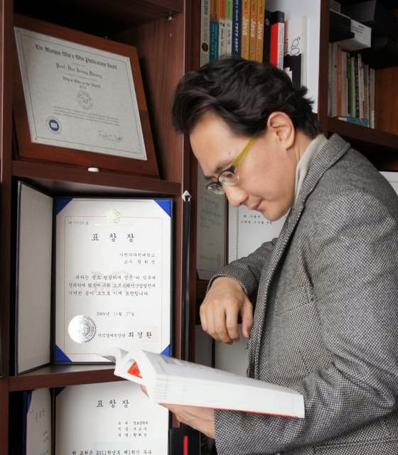

SE-Guardian (2024-2027)
대규모 서비스 배포 이전에 코드 변경 위험도를 자동 평가하는 정적/동적 분석 통합 플랫폼입니다. 코드 복잡도, 테스트 커버리지, 장애 이력 데이터를 결합해 배포 승인 의사결정을 지원합니다.

Software Engineering
Ph.D., Professor, Department of Computer Engineering
대규모 소프트웨어 아키텍처, AI 기반 개발 생산성, 신뢰성 공학을 연구합니다. 산업체와 협업하여 실제 배포 환경에서 검증 가능한 소프트웨어 엔지니어링 방법론을 개발합니다.
황희정 교수는 2012년부터 소프트웨어 엔지니어링 분야에서 교육과 연구를 수행하고 있습니다. 서울대학교에서 컴퓨터공학 학사, KAIST에서 소프트웨어공학 석사 및 박사 학위를 취득했으며, 글로벌 클라우드 기업 연구소에서 시니어 리서처로 활동한 뒤 대학으로 복귀했습니다.
현재는 안전 필수 시스템의 테스트 자동화, 코드 품질 메트릭, 개발자 경험(Developer Experience) 향상을 위한 도구 설계를 중심으로 연구실을 운영하고 있습니다.
| 번호 | 제목 | 분류 | 작성일 |
|---|---|---|---|
| 18 | 국제 공동연구 과제 선정: Trustworthy DevOps for AI-Native Systems | 연구 | 2026-02-20 |
| 17 | 2026학년도 1학기 연구실 인턴 및 대학원생 모집 안내 | 모집 | 2026-01-10 |
| 16 | ICSE 2026 논문 채택: Microservice Failure Propagation | 논문 | 2025-12-05 |
| 15 | 산학협력 세미나 개최: AI 기반 코드 리뷰 자동화 | 행사 | 2025-11-16 |
| 14 | SE-Guardian 베타 버전 공개 및 기술 데모 영상 배포 | 프로젝트 | 2025-10-02 |
대규모 서비스 배포 이전에 코드 변경 위험도를 자동 평가하는 정적/동적 분석 통합 플랫폼입니다. 코드 복잡도, 테스트 커버리지, 장애 이력 데이터를 결합해 배포 승인 의사결정을 지원합니다.

교육용 Git 저장소 데이터를 분석해 팀별 협업 패턴과 코드 품질 변화를 시각화하는 프로젝트입니다. 교수자에게는 진도 기반 피드백을, 학습자에게는 개인화된 개선 가이드를 제공합니다.

머신러닝 기반 소프트웨어의 품질 보증을 위해 테스트 케이스 자동 생성, 모델 드리프트 감지, 운영 환경 이상징후 모니터링을 통합한 프레임워크를 개발했습니다.